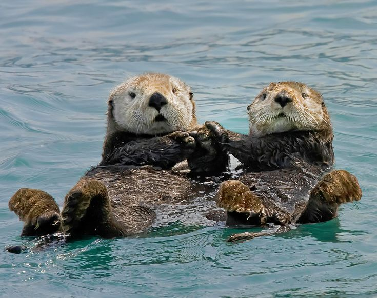
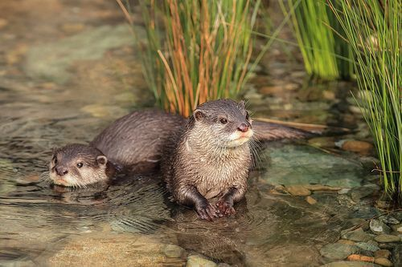
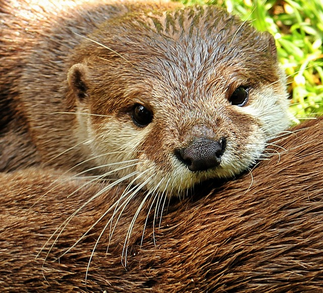

Dlaczego wydry?
Jako grupa zdecydowaliśmy się przygotować prezentację o wydrach, ponieważ to zwierzęta wyjątkowo interesujące pod względem biologicznym i behawioralnym.
Wydry wykazują złożone zachowania społeczne, wykorzystują narzędzia, a także komunikują się ze sobą za pomocą dźwięków i gestów.

Na zdjeciu powyzej są przedstawione dwie wydry trzymające się razem za łapki by nie odpłynąc gdy odpoczywają lub drzemią :)
Gdzie zyją wydry?
Wydry żyją w różnych miejscach na świecie – zarówno w rzekach i jeziorach, jak i wzdłuż wybrzeży mórz i oceanów. W zależności od gatunku mogą różnić się rozmiarem i stylem życia. Przykładowo, wydra olbrzymia występuje w Ameryce Południowej i może osiągać nawet 1,8 metra długości, a najmniejsze – wydry karłowate – zamieszkują tereny Azji..
Futerko Wydr
Jedną z najciekawszych cech wydr jest ich bardzo gęste futro. Jest to najgęstsze futro spośród wszystkich ssaków – na jednym centymetrze kwadratowym może się znajdować nawet milion włosów. To właśnie dzięki temu wydry, szczególnie te morskie, są w stanie utrzymać ciepło nawet w zimnych wodach. Zamiast warstwy tłuszczu, jaką mają foki czy wieloryby, wydry polegają na izolacji, jaką daje im futro.

Futro działa jak wodooporny koc!
Komunikacja
Wydry komunikują się ze sobą za pomocą różnych dźwięków – używają pisków, gwizdów i pomruków, dzięki którym mogą ostrzegać się przed zagrożeniami albo po prostu utrzymywać kontakt w grupie.

zdjęcie jest hiperłączem do filmiku z dźwiękiem wydr :)
Towarzystwo
Wydry są też bardzo społeczne. Wydry morskie potrafią łączyć się w większe grupy, które unoszą się razem na wodzie. W ten sposób czują się bezpieczniej i łatwiej im odpoczywać. Młode wydry przez długi czas przebywają z matkami – uczą się od nich pływania, zdobywania pożywienia i innych niezbędnych umiejętności.
mała wydra odpoczywająca na brzuszku swojej mamy
"Even an otter picks up a rock once in a while to open a clam."
- Chuck Lorre